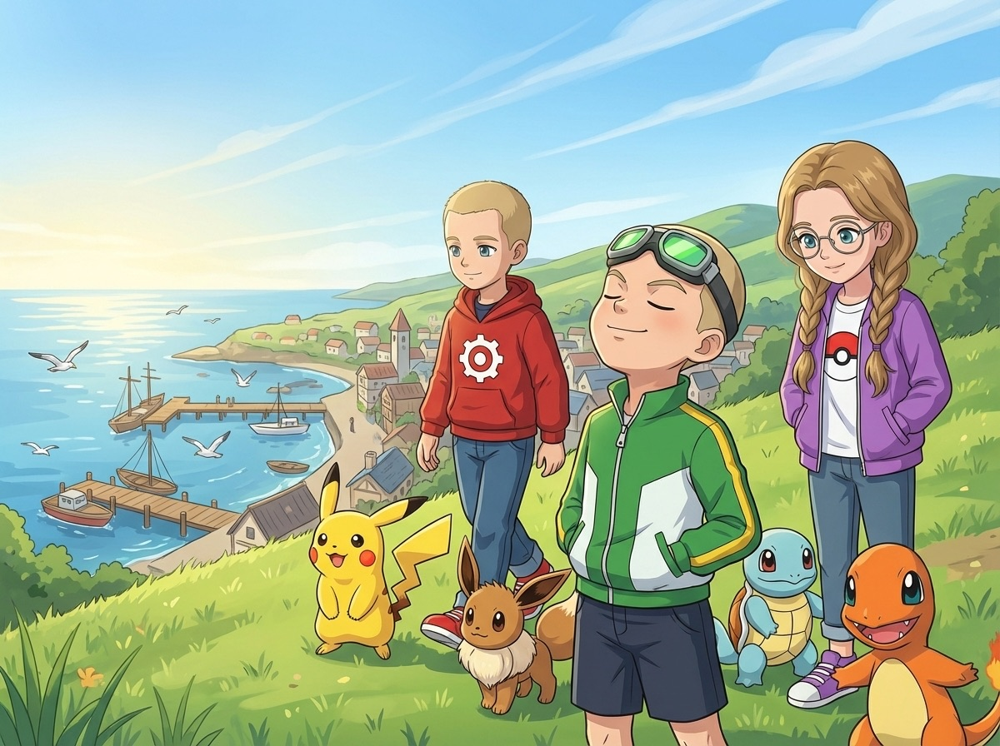
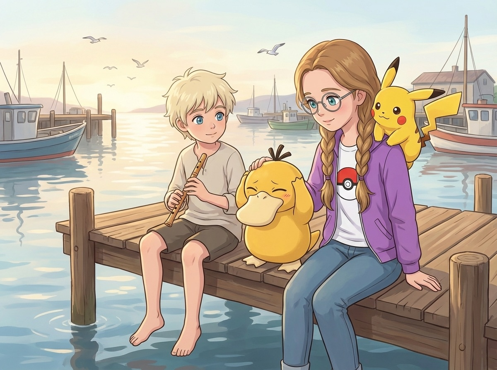
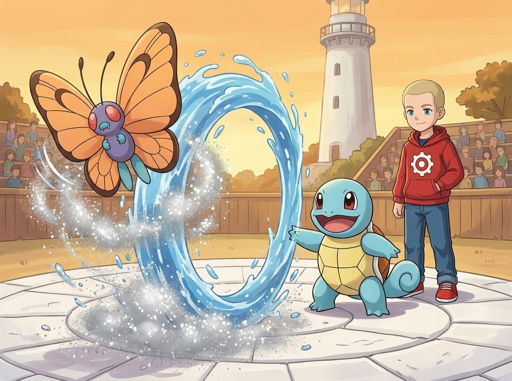
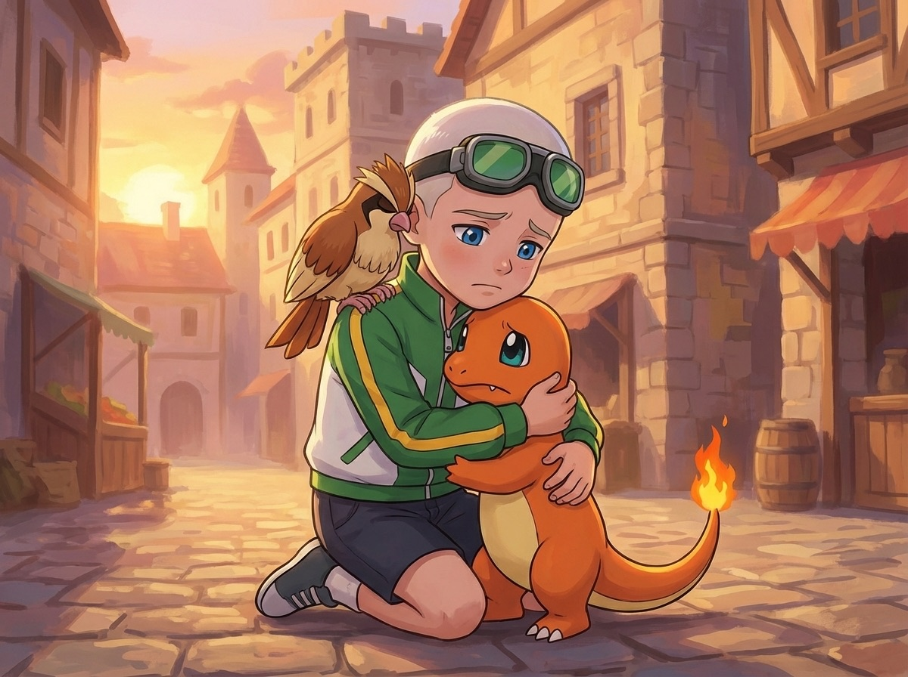
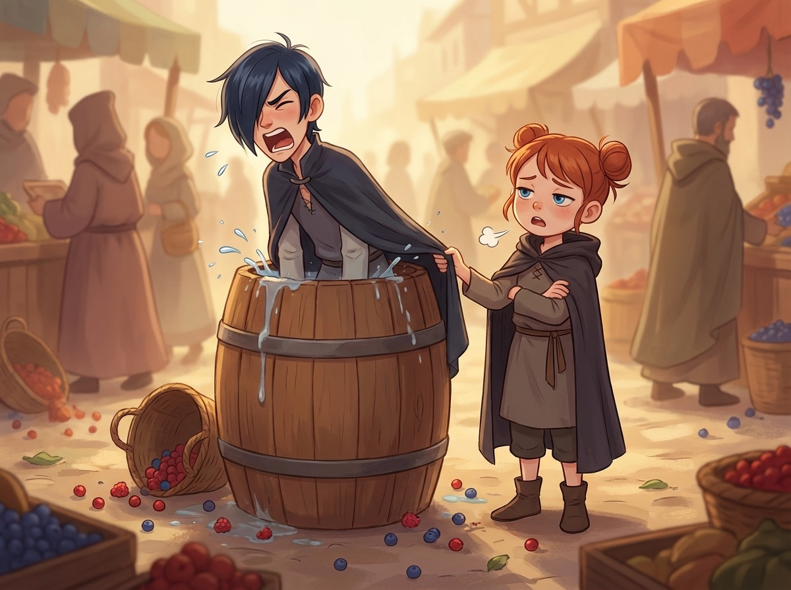
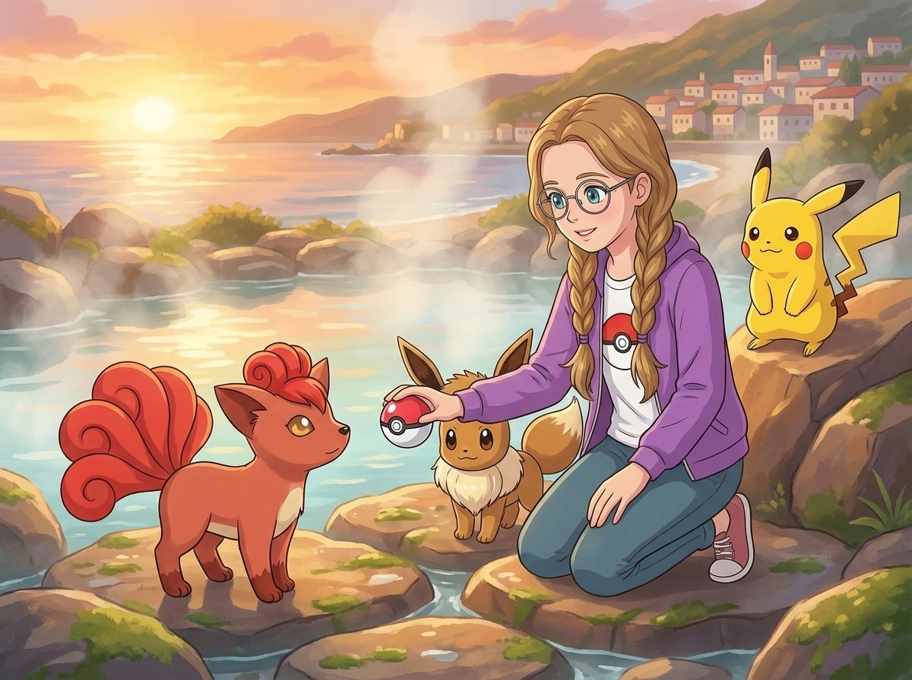

Сезон 1 — Три тренера и тайна Серебряного леса
Эпизод 6. «Стратег Ромус»
Солёный город

Речной Порт пахнул рыбой и свежим хлебом.
Макстер остановился на вершине холма, сдвинул зелёные гоглы на лоб и вдохнул — полной грудью, закрыв глаза, как будто пытался съесть весь этот запах.
— Рыба! — выдохнул он. — И что-то сладкое!
— Хлеб, — поправил Ромус, шагая мимо. Красная худи с шестерёнкой мелькнула в утреннем солнце. Сквиртл (Squirtle) топал рядом — маленький, деловитый, с видом «я тут главный».
— Нет, точно что-то сладкое. Пирожки, может.
— Это хлеб, Макстер. Просто свежий.
Кристи не слушала их. Она стояла чуть впереди — косички подпрыгивали на ветру, фиолетовая куртка с покеболом расстёгнута на солнце. Пикачу (Pikachu) на плече, Иви (Eevee) у ног. Кристи смотрела вниз — на город.
Речной Порт лежал в бухте, как ладонь, подставленная солнцу. Деревянные причалы уходили в воду, лодки покачивались на волнах, чайки кружили над крышами.
По набережной шли рыбаки — у каждого на плече или у ног сидел маленький покемон. Ремораид (Remoraid) выпрыгнул из воды у ближайшего причала и плюхнулся обратно — БУЛТЫХ. Голдин (Goldeen) блеснул чешуёй на солнце.
— Красиво, — тихо произнесла Кристи.
Пикачу навострил уши. Потянул носом. Потом ткнул лапкой вниз — к набережной.
— Пика. — Мол, «туда. Там интересно.»
Они спустились по каменной лестнице — ступени были тёплые от утреннего солнца и чуть липкие от морской соли. Бульбазавр (Bulbasaur) шёл осторожно, ступал каждой лапой отдельно, принюхивался. Пиджеотто (Pidgeotto) на плече Макстера топорщил перья — ему не нравился ветер с моря. Чармандер (Charmander) бежал рядом, хвост покачивался из стороны в сторону, пламя мерцало ярко — город ему нравился.
На набережной висел плакат:
МИНИ-ТУРНИР РЕЧНОГО ПОРТА
Для начинающих тренеров · Сегодня · Арена у маяка
Макстер рванул к плакату так быстро, что Пиджеотто чуть не слетел с плеча.
— Турнир! Сегодня! Мы идём!
Ромус остановился. Прочитал плакат. Прочитал ещё раз. Достал блокнот.
Турнир. Три боя. Формат на вылет.
Он стиснул карандаш чуть крепче, чем нужно. Никто не заметил.
А если я ошибусь? Если мои расчёты не сработают?
Сквиртл посмотрел на него снизу вверх. Наклонил голову.
— Сквир?
Ромус посмотрел на Сквиртла. Потом на Бульбазавра, который стоял рядом — сдержанный, серьёзный, как всегда.
— Мы готовы, — произнёс Ромус. Тихо. Больше себе, чем покемонам.
Бульбазавр коротко кивнул. Ромус кивнул в ответ.
Но прежде чем идти к арене, Кристи заметила мальчика.
Он сидел на краю причала, ноги свисали над водой. Рядом — маленький жёлтый покемон с плоским клювом. Покемон держался за голову двумя лапками и морщился.
— Псидак (Psyduck), — прошептала Кристи, заглянув в Покедекс. — Водяной тип. Известен хронической головной болью — не лечится, только облегчается.
Мальчику было лет десять. Перед ним лежала маленькая деревянная дудочка.

— Что с ним? — Кристи подсела рядом.
Мальчик поднял глаза. Большие, уставшие.
— Он так родился. Врачи говорят — нельзя вылечить. Но когда я играю, — он поднял дудочку, — он засыпает. И боль проходит.
Он поднёс дудочку к губам. Тихая мелодия — простая, похожая на колыбельную. Псидак моргнул. Потом ещё раз. Потом голова опустилась на лапки, и он засопел. Тихо, мирно.
Кристи смотрела молча. Пикачу на её плече прижал уши — не от страха, а от... чего-то другого. Чего-то мягкого.
Кристи достала из рюкзака ягоду Оран. Последнюю.
— Вот. Может, поможет.
— Но это же последняя, — мальчик покосился на рюкзак.
— Тогда найдём ещё.
Мальчик взял ягоду. Улыбнулся — не широко, а так, как улыбаются люди, которые давно не слышали добрых слов.
— Как его зовут? — спросила Кристи.
— Дак. Просто Дак.
— Привет, Дак, — Кристи помахала Псидаку. Тот приоткрыл один глаз, моргнул — и снова засопел.
— Ты хороший тренер, — сказала Кристи мальчику. — Ты заботишься о нём. Это главное.
Мальчик моргнул. Кивнул. Отвернулся — быстро, чтобы она не увидела, что глаза стали мокрые.
Макстер стоял рядом и молчал. Ромус тоже — но он заметил, как Кристи улыбнулась мальчику на прощание, и тихо записал что-то в блокнот.
Вечером Макстер спросит: «Почему ты отдала последнюю ягоду чужому покемону?» И Кристи ответит: «А ты бы не отдал?» И Макстер задумается. И не ответит.
Но это будет вечером. А сейчас — турнир.
Три боя Ромуса
Арена у маяка была круглая, вымощенная белым камнем, с деревянными скамейками вокруг. На скамейках — человек тридцать: рыбаки, дети, пара пожилых женщин с Голдинами на коленях. Медсестра Джой стояла у входа в маленький Покемон-центр с Чанси (Chansey) — розовым круглым покемоном. Чанси прижимала яйцо к животу обеими лапками и покачивалась на пятках — будто баюкала его.
— Это настоящий Покемон-центр! — Кристи схватила Ромуса за рукав. — Настоящий! Я только в Покедексе видела!
Она потянула мальчиков ко входу. Внутри пахло чистотой и чем-то сладким — как в аптеке, но приятнее. На полках стояли баночки с ягодами, аппараты мигали зелёными огоньками, а в углу на мягкой подушке дремал чей-то Раттата (Rattata).
Макстер сразу потянулся к аппарату с мигающими кнопками.
— Не трогай, — Джой мягко, но твёрдо перехватила его руку. — Это лечебная капсула. Она сейчас лечит Голдина после турнира.
— А как она лечит? — Ромус уже стоял рядом, блокнот наготове.
Джой улыбнулась.
— Покемоны восстанавливаются быстрее людей. Капсула просто создаёт идеальные условия — тепло, тишину, правильную энергию. Остальное покемон делает сам.
Чанси подошла к Ромусу и протянула ему маленькую ягоду. Серьёзно. Как лекарство.
— Чанси, он не болеет, — вздохнула Джой.
Чанси посмотрела на Джой. Снова на Ромуса. И настойчиво ткнула ягодой ему в руку. Ромус взял. Чанси кивнула — довольная — и убежала за стойку.
Кристи уже записывала в Покедекс: «Покемон-центр. Бесплатно. Чанси — помощница Джой. Раздаёт ягоды всем подряд.»
— А можно привести покемона на лечение? — спросил Макстер. — Ну, после боя?
— Конечно, — улыбнулась Джой. — Для этого мы и работаем. Приходите после турнира.
Ромус не смотрел на Покемон-центр. Он смотрел на участников турнира. Блокнот был открыт. Карандаш двигался.
Тренер номер три — Баттерфри (Butterfree). Летающий и насекомый. Усыпляющая пыльца — он использовал её в предыдущем бою. Значит, это его главная тактика.
Тренер номер семь — Сэндшру (Sandshrew). Земляной. Слабость — трава и вода.
Финалист прошлого месяца — Нидоран (Nidoran). Ядовитый. Тяжёлый. Нужна комбинация.
Кристи положила руку ему на плечо.
— Ромус. Дыши.
Он поднял глаза. Она улыбалась.
— Ты готов. Ты готовился к этому с Каменного Брода.
— Я готовился, — кивнул Ромус. — Но «готовился» и «готов» — это разные вещи.
— Каждый раз, когда ты говоришь «я не готов» — ты потом побеждаешь. Это уже традиция, — Кристи подмигнула.
Ромус фыркнул. Почти улыбнулся.
Первый бой. Сквиртл vs Баттерфри.
Тренер-девочка с Баттерфри вышла на арену уверенно. Баттерфри расправил крылья — красивые, с фиолетовым узором.
— Удачи, — сказала девочка. Вежливо. Но глаза — хитрые.
— Спасибо, — ответил Ромус. — Тебе тоже.
— Баттерфри, Sleep Powder! — скомандовала она сразу.
Облако серебристой пыльцы поплыло к Сквиртлу.
Ромус не дрогнул.
— Сквиртл, Water Pulse. В пыльцу.

Сквиртл открыл рот — и выпустил не струю, а кольцо воды, которое пронеслось сквозь облако пыльцы и сбило её на землю. Мокрая пыльца прилипла к камням арены — безвредная.
За кольцом шёл второй удар — волна воды попала в Баттерфри. Тот закрутился в воздухе.
— Ещё раз. Water Pulse.
Второй удар. Баттерфри упал на арену. Крылья обвисли.
Три секунды. Тишина. Потом — аплодисменты.
— Он знал! — Макстер подскочил на скамейке. — Он знал про пыльцу заранее!
— Конечно знал, — Кристи закатила глаза. — Он полчаса сидел с блокнотом. Ты думал, он рисует?
— А я бы просто Ember — и вперёд, — Макстер почесал затылок.
— И поэтому ты сейчас на трибуне, а он на арене, — Кристи подмигнула.
— Обидно!
— Правдиво.
Ромус выдохнул. Руки чуть дрожали, но он спрятал их в карманы худи.
Сработало. Расчёты сработали. Может, я и правда готов.
Второй бой. Бульбазавр vs Сэндшру.
Бульбазавр вышел на арену. Остановился. Посмотрел на Ромуса — долго, внимательно.
Ты мне доверяешь? — казалось, спрашивал взгляд.
— Бульбазавр, — Ромус кивнул. — Я верю в тебя.
— Бульба, — ответил Бульбазавр. Тихо. Но луковица на спине чуть раскрылась — готов.
Сэндшру — маленький жёлтый броненосец — свернулся в шар и покатился к Бульбазавру.
— Смотри, он катится! — Макстер с трибуны. — Как мячик!
— Razor Leaf, — спокойно скомандовал Ромус.
Из луковицы Бульбазавра вылетели острые листья — зелёная вспышка. Листья ударили Сэндшру — суперэффективно! Земляной тип против травы. Сэндшру выкатился из шара и лежал, моргая.
Первый бой Бульбазавра. Первая победа.
— Суперэффективно! — крикнула Кристи с трибуны. — Трава против земли, классика!
— Ты знала? — Макстер повернулся к ней.
— Я Покедекс читаю. А ты?
— ...я его открывал. Один раз.
Бульбазавр обернулся к Ромусу. Тот поднял большой палец: «Хорошо.»
Луковица на спине Бульбазавра сжалась — довольная.
Макстер на скамейке подскочил:
— Он его с одного удара! РОМУС!
Кристи не кричала. Она смотрела на Ромуса — и заметила. Уголки его губ дрогнули. Поднялись.
Это была не привычная мягкая улыбка Ромуса. Это было что-то новое. Что-то шире, ярче. Как будто он впервые позволил себе радоваться.
Третий бой. Финал. Сквиртл и Бульбазавр vs Нидоран.
Тренер с Нидораном — мальчик постарше, серьёзный, с шрамом на руке.
Нидоран — фиолетовый, ядовитый, с рогом. Опасный.
Нидоран сильнее. Но я видел его движения. Я знаю, что делать.
Ромус выставил Сквиртла.
— Будь осторожен, — тихо выдохнул он. Сквиртл хлопнул себя по панцирю — мол, «не волнуйся».
Нидоран ударил Horn Attack — Сквиртл отлетел, покатился по камням. Забрался в панцирь. Выглянул одним глазом — обиженно.
— Сквир...
— Возвращайся, — Ромус поднял покебол. Сквиртл втянулся внутрь. — Бульбазавр, твоя очередь.
Бульбазавр вышел. Нидоран рванул в атаку — Double Kick!
— Он быстрый, — крикнул тренер с Нидораном. — Быстрее твоего травяного.
— Может быть, — ответил Ромус. — Vine Whip!
Лозы Бульбазавра хлестнули Нидорана по лапам. Тот споткнулся — покатился по камням, перевернулся на спину. Лапы дёрнулись в воздухе.
— Razor Leaf!
Листья ударили в упор — Нидоран зажмурился, но поднялся. Упрямый.
— Бульбазавр, возвращайся, — Ромус поднял покебол. Бульбазавр втянулся. — Сквиртл, твоя очередь. Water Gun — пока он не встал!
Сквиртл выскочил из покебола, прищурился и выпустил струю воды — прямо в морду Нидорану. Тот зажмурился, фыркнул, покачнулся. И упал набок. Лапы дёрнулись и замерли.
Тишина.
Потом — шум. Аплодисменты. Рыбаки вставали со скамеек. Мальчик с Нидораном подошёл и протянул руку:
— Хороший бой. Никто раньше не догадывался переключать покемонов в финале.
Ромус пожал руку. Рука тренера была жёсткая, мозолистая — рыбак.
— Спасибо. У тебя сильный Нидоран.
— Лови победителя, — тренер кинул ему маленький значок с маяком. — Это приз турнира. Носи с гордостью.
— Ромус! — Кристи сбежала с трибуны. — Ты выиграл! Ты ВЫИГРАЛ!
— Три боя, — Ромус посмотрел на значок. — Три из трёх.
— Я же говорила — традиция! — Кристи обняла его. Быстро, крепко, потом отпустила.
Ромус покраснел. Чуть-чуть.
Он побеждал. Не силой — умом. Не чужими руками — своими.
Ромус стоял на арене. Сквиртл справа, Бульбазавр слева. Оба смотрели на него.
Ромус улыбался — широко, по-настоящему, так, что Кристи на трибуне почувствовала, как щиплет в глазах. Она не плакала. Просто... было хорошо. Очень.
Макстер орал: «РОМУС! ТЫ ЛУЧШИЙ!» Пиджеотто на его плече недовольно хлопал крыльями от шума. Чармандер подпрыгивал рядом, пламя на хвосте горело ярко.
Злость и огонь
Зрители расходились. Ромус прижимал значок с маяком к ладони — маленький, тяжёлый, настоящий. Кристи уже тянула его к Покемон-центру — отдать Сквиртла на лечение. А Макстер нашёл себе проблему.
У входа на арену стоял парень — лет четырнадцати, с кожаной курткой и шрамом от ожога на тыльной стороне руки. Он крутил покебол на пальце — быстро, не глядя, как фокусник.
— Новичков пускают на турнир? — парень посмотрел на Макстера сверху вниз. — Ты вообще сколько боёв выиграл?
— Достаточно, — Макстер сжал кулаки. Чармандер рядом зарычал — низко, тихо.
— Это Блейз, — шепнул кто-то за спиной. — Он здесь всех побеждает.
— Хочешь попробовать, малыш? — Блейз достал покебол. — Или побежишь к маме?
Макстер не побежал.
— К маме? У меня два покемона. И оба сильнее твоего.
Блейз поднял бровь:
— Два? Вау. Я впечатлён. Махоп, выходи.
Красная вспышка покебола — и на арене появился Махоп (Machop). Серая кожа, мускулы как у взрослого, хотя ростом — Макстеру по плечо. Махоп скрестил руки на груди и посмотрел на Чармандера сверху вниз. Спокойно. Как на муравья.
Чармандер зарычал. Пламя на хвосте вспыхнуло.
— Чармандер, Ember!
Чармандер дохнул огнём. Махоп даже не отшатнулся. Огонь ударил его в грудь и рассыпался искрами.
— Пиджеотто, Gust!
Пиджеотто взмыл — но Макстер кричал слишком быстро, слишком много, слишком громко. Команды налезали друг на друга. Пиджеотто дёрнулся влево, когда нужно было вправо. Чармандер атаковал, когда нужно было уклоняться.
Махоп ударил — Karate Chop. Чармандер отлетел. Пламя на хвосте дёрнулось и потускнело. Пиджеотто спикировал сверху — Махоп даже не обернулся, просто отмахнулся как от мухи. Пиджеотто врезался в ограждение арены и сполз на землю.
— Ещё! EMBER!
Чармандер попытался. Огонь вышел жидкий, слабый. Махоп даже не уклонился.
Второй удар. Чармандер упал на колено. На бок. Пламя на хвосте мерцало — еле-еле.
Макстер стоял. Кулаки побелели. Внутри — не обида. Злость. На Блейза. На себя. На всё.
Пиджеотто на его плече сложил крылья и опустил голову. Как будто тоже проиграл.
Блейз ухмыльнулся:
— Новичок. Как я и говорил.
Макстер не ответил. Подобрал Чармандера. Тот смотрел на него снизу — виновато, как будто он подвёл. Пламя на хвосте чуть вспыхнуло, когда Макстер прижал его к груди.

— Ты не виноват, — прошептал Макстер. — Это я. Я командовал как дурак.
Чармандер ткнулся носом ему в шею. «Чар.» Мол — ничего. Мы ещё попробуем.
— Чар-чар, — повторил он. Настойчиво.
— Ладно, ладно, — Макстер чуть улыбнулся. Криво, но улыбнулся.
Кристи подошла. Помолчала. Потом:
— Макстер.
— Что?
— Ты проиграл не Блейзу.
Пауза.
— Ты проиграл своей злости. Когда ты злишься — ты кричишь. Когда ты кричишь — Чармандер теряется. Когда Чармандер теряется — Пиджеотто не знает, кого слушать.
Макстер открыл рот. Закрыл. Отвернулся — резко, как от пощёчины. Покебол Чармандера в его руке сжался так, что побелели костяшки.
Чармандер в его руках поднял голову и посмотрел на хозяина. Пламя на хвосте дрогнуло и стало ещё тусклее — маленький оранжевый огонёк, почти невидимый.
Она была права. И это было хуже всего — потому что он это знал.
— Я… знаю, — выдавил Макстер. Не повернулся.
— Тогда в следующий раз, — Кристи положила руку ему на плечо, — дыши. Как Ромус.
Ромус подошёл. Положил руку Макстеру на другое плечо. Ничего не сказал — только кивнул. Один раз.
Пикачу спрыгнул с плеча Кристи и подошёл к Чармандеру. Протянул лапку. Чармандер ткнулся в неё носом. Пламя на хвосте чуть ожило.
Где-то в стороне, у рыночных рядов, послышался крик.
— Новейшие покеболы! Прямиком с фабрики! Специальный выпуск!
Двое в тёмных плащах. Один — высокий, тощий, с синей чёлкой на один глаз. Второй — ниже на голову, с рыжими пучками и выражением усталого сарказма.
Макстер остановился.
— Покеболы? — он вытер лицо рукавом. — Настоящие?
— ЛУЧШЕ заводских! — высокий размахивал руками. — Молодой тренер, со скидкой!
— Макстер, не покупай, — Кристи потянула его за рукав.
— Почему? Смотри, блестит!
— Потому что настоящие покеболы не продают с лотка.
— Ты просто завидуешь, что я первый нашёл.
Макстер купил один за три монеты. Повертел в руках. Нажал кнопку.
Кнопка отвалилась.
Пауза.
— Бежим, — бросила рыжая, уже швырнув недоеденный пирожок на прилавок.

Они побежали. Высокий зацепил тележку с ягодами — ягоды раскатились по всему рынку. Хозяйка тележки закричала. Её рыжий покемон удивлённо фыркнул. Высокий на бегу поскользнулся на ягоде, упал, поднялся, и театрально крикнул:
— Мы ещё вернёмся, мелюзга!
— Шпингалеты! — добавила рыжая, уже далеко.
И упал в бочку с водой. БУЛТЫХ.
Рыжая остановилась. Вздохнула. Вернулась. Вытащила его за воротник. Убежали вместе, оставив за собой море ягод и обиженную хозяйку.
Кристи подняла «покебол» с земли. Теннисный мячик, раскрашенный в красно-белый.
— Макстер, за сколько ты его купил?
— …за три монеты.
— Три монеты за теннисный мячик. Новый рекорд.
Макстер покосился на мячик. На Кристи.
— Ты ведь предупреждала.
— Я предупреждала.
— И ты даже не скажешь «я же говорила»?
— Зачем? Ты сам только что это сказал.
Макстер рассмеялся. Первый раз после проигрыша.
Чармандер рядом поднял голову. Пламя на хвосте чуть-чуть ожило.
Огонь и согласие
Вечером, когда солнце садилось в бухту и вода стала оранжевой, Кристи пошла к горячему источнику за городом. Одна. Точнее — с Пикачу и Иви.
У источника поднимался пар. Тёплые камни, запах серы — не противный, а мягкий, как запах горячей ванны. В клубах пара мелькнул рыжий хвост.
Маленький покемон. Рыжий мех, шесть закрученных хвостов, золотые глаза. Сикстейлс (Vulpix).
Кристи замерла. Иви у её ног тоже — уши вперёд, нос дрожит.
— Ии-ви? — тихо спросил он. Мол — «кто это?»
— Сикстейлс, — прошептала Кристи Пикачу. — Огненный тип. Красивая...
Сикстейлс повернула голову. Увидела Кристи. Прищурилась.
Потом — фыркнула. Из ноздрей вырвалась струйка огня — прямо в сторону Кристи. Не сильная, но горячая. Предупреждение.
— Эй!
Кристи вскочила. Руки сжались в кулаки. Иви прижался к её ноге — шерсть дыбом, уши назад.
— Она первая начала! Пикачу, Thundersh—
— Стоп.
Ромус. Он стоял чуть позади — пришёл следом, блокнот торчал из кармана.
— Она первая начала! — Кристи развернулась к нему. Щёки горели. Не от огня — от обиды. — Ты видел?! Она плюнула огнём! Прямо в меня!
— Она испугалась, — спокойно ответил Ромус. — Она у горячего источника одна. Ты пришла. Она защищается.
— Мне всё равно! Пикачу, Thunder—
— Кристи. — Ромус не повысил голос. Но что-то в его тоне остановило её. — Подожди. Тут есть закономерность. Ты злишься — и хочешь атаковать. Как Макстер с Блейзом. Помнишь, чем это кончилось?
Кристи стиснула зубы. Пикачу на плече покосился на неё — щёки чуть искрили. Ждал команды.
— Я сама разберусь, — процедила она.
— Тогда докажи.
Пауза. Долгая. Щёки Пикачу засветились ярче — он был готов бить по первому слову. Иви у её ноги перестал дрожать — но смотрел на хозяйку, ждал.
Кристи стиснула зубы так, что заболела челюсть. Пальцы впились в ладони.
Спокойно. Я знаю, что делать. Спокойно.
Медленно — очень медленно — кулаки разжались.
— Ладно. Но если она хочет бой — она его получит. По-честному.
— Честный бой — это правильно, — Ромус чуть улыбнулся.
Кристи посмотрела на Пикачу. Пикачу спрыгнул с плеча и встал напротив Сикстейлс. Щёки засверкали.
Сикстейлс фыркнула снова. Шерсть встала дыбом, шесть хвостов распушились — она стала вдвое больше. Готова.
— Пикачу, Quick Attack!
Пикачу рванул — жёлтая молния. Удар! Сикстейлс покатилась по камням, но тут же вскочила — быстрая.
Сикстейлс ответила — Ember! Струя огня полетела в Пикачу.
— Уклонись! Влево!
Пикачу метнулся. Огонь пролетел мимо — горячий ветер обжёг Кристи щёку.
— Thundershock!
Молния ударила Сикстейлс. Та вскрикнула — у огненного типа нет слабости к электричеству, но больно всё равно.
Сикстейлс пошатнулась. Хвосты опустились.
— Вал... — выдохнула она. Тихо, почти жалобно — как будто просила остановиться.
Кристи достала покебол. Посмотрела на него. На Сикстейлс.
Покебол остался в руке.

Кристи опустилась на колени. Медленно. Камни у источника были тёплые и мокрые от пара.
— Я не хочу тебя поймать силой, — тихо сказала она. — Ты сильная. Ты показала это. Но я не такой тренер.
Сикстейлс стояла. Дышала. Золотые глаза смотрели на Кристи — не враждебно. Оценивающе.
Иви подошёл к Сикстейлс. Ткнулся носом в её мокрый бок. «Привет. Мы хорошие. Честно.»
Сикстейлс посмотрела на Иви. Потом на Пикачу. Потом — на Кристи.
Долго.
Потом кивнула. Один раз. Как Пикачу.
Кристи протянула покебол. Сикстейлс коснулась его носом.
Красный луч. Покебол затрясся.
Раз. Два. Три.
Щёлк.
Кристи прижала покебол к груди. Руки дрожали.
— Добро пожаловать, — прошептала она. — Ты — моя.
Пикачу запрыгнул обратно на плечо. Потёрся щекой о щёку Кристи. Одобрение.
— Пика, — кивнул он. Один раз.
Ромус за её спиной тихо улыбнулся. Достал блокнот. Записал одно слово: «Согласие».
Вечером у костра Ромус, как всегда, резал авокадо ровными дольками. Макстер жевал хлеб с маслом толщиной в палец — рядом сидел Чармандер и смотрел на масло с надеждой. Пиджеотто устроился на ветке — выше всех, разумеется — и принципиально смотрел в другую сторону.
Новенькая Сикстейлс лежала у ног Кристи, свернув все шесть хвостов вокруг себя, и дремала. Иви устроился рядом — аристократично, подложив лапку под голову. Пикачу сидел на плече Кристи и наблюдал за всеми — щёки не искрили, но взгляд был бдительный. Свой. Территория.
Бульбазавр и Сквиртл сидели рядом — плечом к плечу. Сквиртл подвинул Бульбазавру ягоду. Бульбазавр взял. Молча.
— Ромус, — Макстер прожевал. — Ты сегодня был... ну... огонь.
— Это ведь я должен говорить «огонь», — ответил Ромус. — Это моя фраза.
— Это МОЯ фраза!
— Тогда не используй её применительно ко мне. Я — вода, — Ромус показал на Сквиртла. — И трава, — показал на Бульбазавра.
Макстер хотел возразить, но рассмеялся. Чармандер рядом подпрыгнул — пламя вспыхнуло.
— Чар?
— Ничего, ничего. Просто смешно.
Кристи подняла покебол Сикстейлс. Повертела в руках.
— Как думаете, она привыкнет?
— Она кивнула тебе, — ответил Ромус. — Сикстейлс не кивают просто так.
— Ты откуда знаешь? — Макстер.
— Прочитал. В Покедексе.
Кристи смотрела на них. На Ромуса, который сегодня впервые улыбался по-настоящему — широко, без привычной сдержанности. На Макстера, который проиграл, но не сломался. На покемонов, которые сидели рядом — как семья, а не как «команда для боёв».
Мы становимся сильнее. Не потому что побеждаем. А потому что вместе.
За портовым складом, где никто не ходил, Дарк выжимал плащ. Вода капала на камни. Рядом Фокс сидела на ящике, скрестив руки, и считала выручку.
— Ноль, — сказала она.
— Не ноль! Мы продали один покебол!
— За три монеты. Которые мы потратили на пирожки. Итого — ноль.
Дарк повесил плащ на верёвку. Плащ тут же упал в лужу.
— В следующий раз, — Дарк поднял палец, — мы придём в ДРУГОЙ город. С ДРУГОЙ схемой. И НИКАКИХ бочек.
— Ты это говоришь каждый раз, — Фокс встала. — Идём. Командор ждёт отчёт.
— Какой отчёт? Мы ничего не...
— Вот именно.
Шаги. Тихое ворчание. Далеко за складом мелькнули два силуэта — один высокий и мокрый, другой короткий и раздражённый.
Никто из героев не заметил.
Ромус листал блокнот. Остановился на странице с пометками.
— В следующем городке есть библиотека, — сказал он тихо. — С очень старыми картами.
Кристи подняла голову.
— Карты чего?
Ромус помолчал.
— Серебряного леса.
Урок этого эпизода
Настоящая сила — не в мощи, а в уме. И настоящие друзья радуются успехам друг друга.